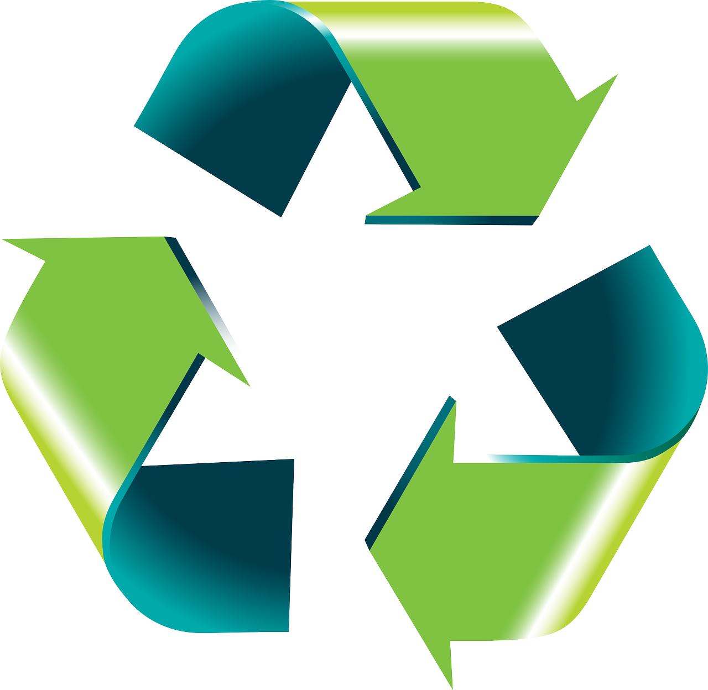
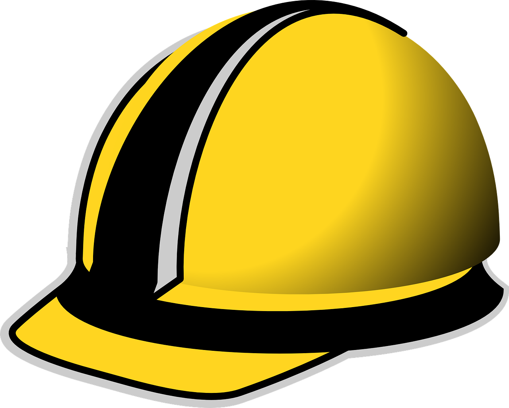
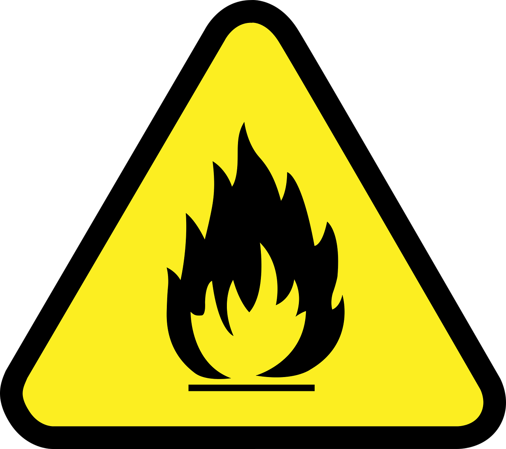
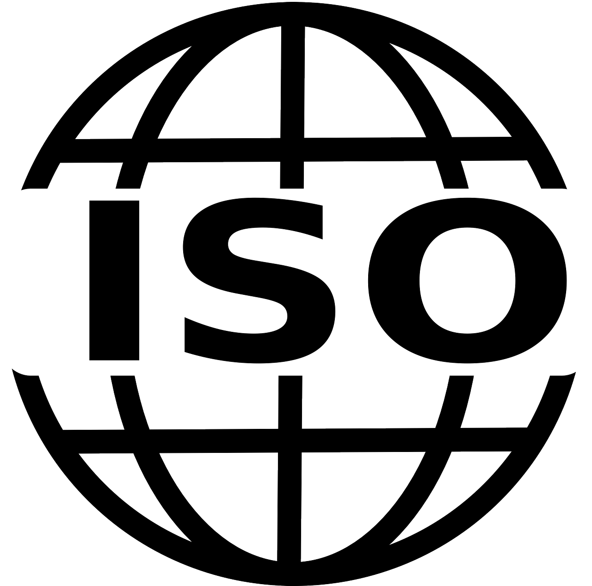

Szolgáltatásaink
- Környezetvédelem
- Munkavédelem
- Tüzvédelem
- ISO Minősítések
- 
- 
- 
- 
Munka-, tűz-, környezetvédelmi szakértői szolgáltatás
Üdvözöljük vállalkozásunknál! Több mint 30 éves tapasztalatunkra támaszkodva nyújtunk szakértői megoldásokat a munkavédelem, tűzvédelem és környezetvédelem területén. Az elmúlt három évtizedben célunk mindig az volt, hogy partnereink számára megbízható, jogszabályoknak megfelelő, ugyanakkor gyakorlati szempontból is hatékony támogatást biztosítsunk. Széleskörű tapasztalatunk kiterjed: Munkavédelemre, ahol segítünk minimalizálni a munkahelyi balesetek kockázatát, és hozzájárulunk a munkavállalók biztonságához. Tűzvédelemre, ahol megoldásainkkal csökkentjük a tűzesetek kockázatát, és biztosítjuk az előírások maradéktalan betartását. Környezetvédelemre, ahol fenntartható megoldásokkal támogatjuk ügyfeleinket, hogy vállalkozásuk környezetbarát módon működjön. Munkánk során kiemelt figyelmet fordítunk az ügyfeleink igényeire, legyen szó oktatásokról, kockázatelemzésekről, szakmai dokumentációk elkészítéséről vagy helyszíni tanácsadásról. Csapatunk a legkorszerűbb technológiákat és módszereket alkalmazza annak érdekében, hogy ügyfeleink mindig naprakészen és a legjobb megoldásokkal dolgozhassanak. Az évek során számtalan iparágban bizonyítottuk szakértelmünket, és partnereink között találhatóak kisvállalkozások, középvállalatok, valamint nagyvállalatok is. Büszkék vagyunk rá, hogy munkánkkal hozzájárulhatunk egy biztonságosabb, fenntarthatóbb és jobb jövő megteremtéséhez. Ha Önnek is fontos a biztonság, a környezetvédelem és a szakmai kiválóság, keressen minket bizalommal! 🌱
Szolgáltatásaink